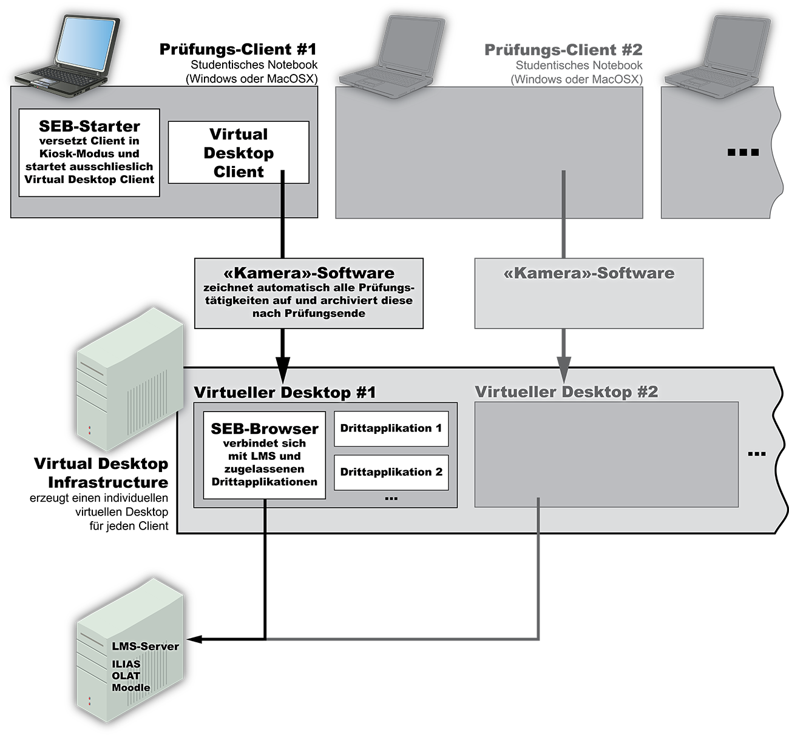

Kompetenzorientiertes Prüfen mit virtueller
|
Kompetenzorientiertes Prüfen zeichnet sich als eines der grossen, zukünftigen Ausbaufelder im Bereich E-Assessment ab. In den meisten Fachgebieten sind applikationsbasierte Szenarien vorstellbar, die das praxisnahe Überprüfen von Kompetenzen erlauben. Solche Szenarien benötigten bisher spezialisierte und im Allgemeinen aufwändig hergestellte Betriebssystem-Setups, um sie sinnvoll in einem Prüfungsrahmen anbieten zu können. Als besser zu handhabende Lösung bietet sich der Einsatz virtueller Desktops im Rahmen einer virtuellen Desktop Infrastruktur (VDI) der Hochschule an, wobei die Prüfungsrechner mittels Safe Exam Browser abgesichtert werden. Nachfolgend wird der technische Aufbau dieser Prüfungsumgebung genauer beschrieben.
Herkömmliche Prüfungsumgebung mit Einsatz von Safe Exam Browser

Schematische Illustration einer herkömmliche Prüfungsumgebung bestehend aus Safe Exam Browser (SEB) als Kiosk-/Lockdown-Browser und einem Prüfungsmodul eines Learning Management System (LMS) wie Moodle, ILIAS oder eines anderen, Web-basierten Prüfungssystem.
Die Kiosk-Applikation (SEB-Starter) macht jeden Rechner zu einer abgesicherten Arbeitsstation, indem verschiedene Systemfunktionen wie zum Beispiel das Umschalten auf andere (unerwünschte) Applikationen, gewisse Tastenkombinationen zur Systemsteuerung oder die Nutzung des Internets temporär eingeschränkt oder gänzlich ausgeschaltet werden.
Der SEB-Starter kann ausserdem andere Applikationen in einem abgesicherten Kontext starten und ausführen, ohne Einsatz von Virtualisierungstechnologien stösst man dabei allerdings an technische Grenzen, insbesondere wenn man komplexe Applikationen einsetzen möchte.
Beispiele für derartige Prüfungsszenarien: In Sozialwissenschaften die Arbeit mit einem Statistikpaket wie SPSS oder R, Numerik in Matlab, Design mit Illustrations- und Grafiksoftware, CAD im Ingenieurswesen, Finanzbuchhaltung mit Excel in Wirtschafswissenschaften, Programmiertechniken für Ingenieure oder Aufgaben im Bereich Softwareentwicklung, die eine integrierte Entwicklungsumgebung voraussetzen.
Solche Szenarien benötigten bisher spezialisierte und im Allgemeinen aufwändig hergestellte Betriebssystem-Setups (meist basierend auf speziell abgesicherten Linux- oder Windows-Installationen, die dann von separaten Laufwerken oder übers Netzwerk aufgestartet wurden), um sie sinnvoll in einem Prüfungsrahmen anbieten zu können. Als neue Alternative hierzu bietet sich der Einsatz virtueller Desktops im Rahmen einer virtuellen Desktop Infrastruktur (VDI) an, wobei die Prüfungsrechner weiterhin mit SEB abgesichert werden.
Prüfungsumgebung bei Verwendung von
virtueller Desktop-Infrastruktur
Die Prüfungsumgebung bei Verwendung von virtueller Desktop-Infrastruktur unterscheidet sich nur teilweise von derjenigen, die an der ETH für herkömmliche Online-Prüfungen im Einsatz ist. Die wesentlichen Komponenten bleiben gleich, werden aber anders auf die beteiligten Systeme verteilt. So werden die Prüfungsrechner weiterhin mit SEB abgesichert, damit die Studierenden während der Prüfung nicht auf andere Programme zugreifen können. Der Browser-Teil des SEB wird aber deaktiviert, dafür wird ein Virtual Desktop Client in einem durch SEB abgesicherten Kontext gestartet. Die Client-Software verbindet sich danach mit dem VDI-Server und erhält von diesem Zugriff auf ein virtuelles Desktop. Auf diesem läuft dann wiederum SEB und verbindet sich mit seinem integrierten Webbrowser mit dem Prüfungs-Modul im Learning Management System. Im virtuellen Desktop sind die gewünschten Drittapplikationen installiert. Das Betriebssystem in der virtualisierten Maschine kann dabei viel besser abgesichert werden als das auf einem realen Rechner, insbesondere ist der Zugriff auf Hardwareeigenschaften präzise steuerbar. Ausserdem können virtuelle Desktops für unterschiedliche Prüfungen gut archiviert werden.

Übersicht über die gesamte Prüfungsumgebung: Komponenten und schematische Darstellung des Ablaufs einer Online-Prüfung auf einem privaten studentischen Notebook mit der Kombination SEB-Starter plus virtuelle Desktop-Infrastruktur. Letztere liefert dabei die eigentliche Prüfungsumgebung an und ermöglicht gleichzeitig die Aufzeichnung aller Prüfungsaktivitäten.
Detailierte Dokumentation VDI-Prüfungsumgebung
Diese Beschreibung eines generellen Konzeptes für Prüfungen mit Verwendung von VDI und Safe Exam Browser (SEB) beinhaltet auch Prozessbeschreibungen zur Planung und Durchführung solcher Prüfungen. Ausserdem sind Checklisten und technische Details zur Konfiguration und Verwendung einer virtuellen Desktop-Infrastruktur mit SEB aufgeführt (nur in Englisch verfügbar).
Für weitere Informationen:
Projektleiter Safe Exam Browser
Daniel Schneider
Siehe auch:
Schneider, D. R., Piendl, Halbherr, T., Bauer, D., Reuter, K.: Kompetenzorientiertes Prüfen mit virtueller Desktop- Infrastruktur und Safe Exam Browser. In: DeLFI 2013. Die 11. E-Learning Fachtagung Informatik der Gesellschaft für Informatik e.V. (GI).